从零开始ubuntu 18.04
投入kali怀抱好久了,突然想搞ubuntu
一个搞人,一个搞编程,分工明确,嗯
想想搞kali时的艰难经过,想必这次也不会例外
所以记录一下使用ubuntu的曲折历程
要是我的提供不了帮助,建议拉到最下面,点击链接看原博客
每个人情况不一样,我只记录并解决了我所遇到的问题
看着参考越来越多,相当于一个小型资料库了都: (
记录一下时间,要是时间过去很久了,参考价值就小了
2020-04-03(最近更新时间)
换源
1 | sudo gedit /etc/apt/sources.list |
附上清华源
1 | # 默认注释了源码镜像以提高 apt update 速度，如有需要可自行取消注释 |
vim
1 | sudo apt install vim |
一些简单的操作
vim name.txt(打开或创建编辑器)
“i”插入模式(只有进入插入模式才可以更改内容) (^u,好用的删行小技巧)
“esc”退出插入模式
“:”,wq(写入并保存)
(A：在最后输入命令时，直接输入”x”，也是一样的，即X=WQ。
B：最快捷的方法：按了ESC后，直接按shift+zz，或者切换到大写模式按ZZ，就可以保存退出了，即是按2下大写的Z)
pip
安装
1 | sudo apt-get install python-pip |
升级
1 | sudo pip3 install --upgrade pip |
卸载
1 | sudo apt-get remove python3-pip |
vm-tools
电脑里的文件拖不进虚拟机,复制的也粘贴不了
输入命令行全手打,我天
不过这个不是ubuntu的锅,是vm的
1 | sudo apt-get autoremove open-vm-tools |
gcc
安装
1 | sudo apt-get install gcc |
验证
1 | gcc --version |
使用
强烈推荐: http://c.biancheng.net/view/660.html
照着做就会了(为什么有种推销员的感觉???)
好玩的终端命令
小火车
1 | sudo apt install sl |
cmatrix代码雨
1 | sudo apt install cmatrix |
终端火焰
1 | sudo apt-get install libaa-bin |
输入法
安装Fcitx输入框架
1 | sudo apt install fcitx |
安装
上搜狗输入法官网下载Linux版本搜狗输入法（32位和64位根据自己情况，在虚拟机上用浏览器下载
点击安装包
设置
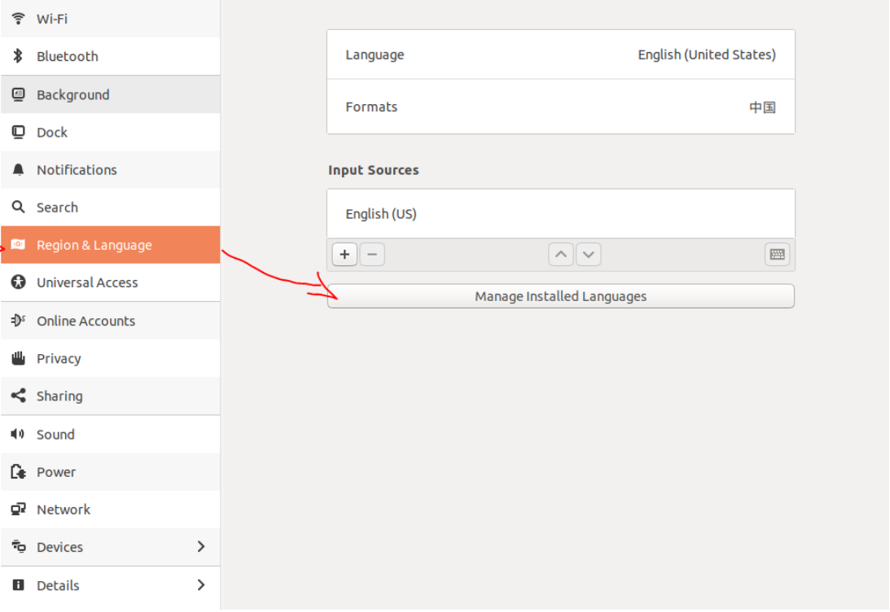
根据红色箭头进入语言安装界面，安装语言（会自动安装中文语言）
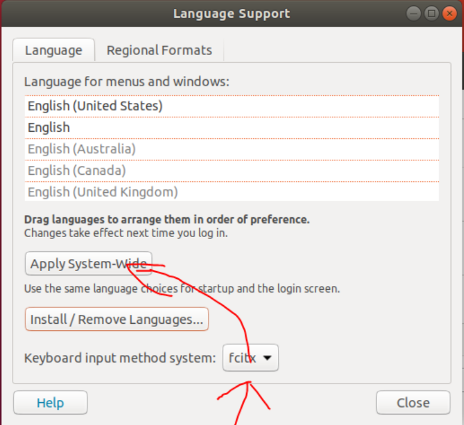
根据下方箭头更爱输入框架为fcitx，然后点击上面的Apply System-Wide应用到全局。然后将当前用户进行注销后再进行登录（注销没有效果，重启就可以了）。
登陆后在右上角出现一个键盘标志，点击进入，选择Configure Current Input Method

进入下面的Input Method界面后，选择+号
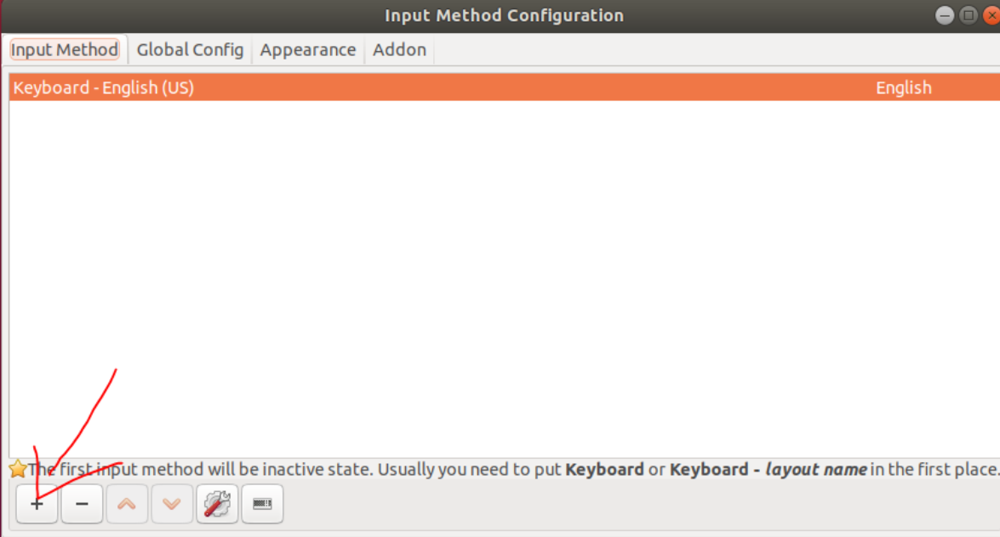
进入到Add input method界面，将下面的Only Show Current Language 点掉后，在搜索栏搜索搜狗拼音，选中之后进行添加。
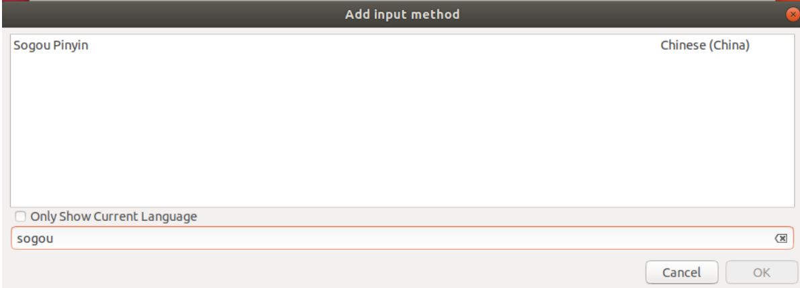
添加成功后，将搜狗拼音移到第一位。
成功之后，打开浏览器随便输入，可以看到输入结果，同时成功后下方还会出现搜狗输入法的标志，这时候就可以通过shirt键切换中英文。
其他
不习惯默认中文的小伙伴可以,把sogou放在第二个
vscode
安装
首先，更新包的索引和安装的依赖键入:
1
2sudo apt update
sudo apt install software-properties-common apt-transport-https wget接下来，使用以下[wget命令]导入Microsoft GPG密钥
1
wget -q https://packages.microsoft.com/keys/microsoft.asc -O- | sudo apt-key add -
并使Visual Studio Coderepository通过键入:
1
sudo add-apt-repository "deb [arch=amd64] https://packages.microsoft.com/repos/vscode stable main"
安装最新版本的Visual Studio代码:
1
2sudo apt update
sudo apt install code
使用
终端输入code,或者单击vscode图标
插件推荐
- Chinese (Simplified) Language Pack for Visual Studio Code 就问你中文香不香
- C/C++
- Python
- Code Runner 可以跑好多种代码,好评
配置c
安装vscode插件———->c/c++
创建一个c文件,输入一些代码
1
2
3
4
5include<stdio.h>
int main()
{
printf("hello world");
}终端输入
sudo apt install gcc在菜单栏里面选择Terminal–>Configure Tasks–>gcc，会自动帮你生成
.vscode目录和一个launch.json文件打开c文件按F5,会报错,顺着点就会自动生成第二个文件
tasks.json再次按F5就成功编译了
- 我看网上很多对于配置文件有所改动,但是就算博主可以用,也是针对他自己的电脑可以用
- 直接复制粘贴,对路径啊什么的略作修改啊,成功率挺低的
- 所以我想看看直接默认配置会怎么样,毕竟软件做出来是给人用的,搞这么麻烦,不人道啊
- ……可以用了: )
- 比起win10,ubuntu意外的好用呢><
配置py
- 安装python插件
- 新建test.py文件,会弹出
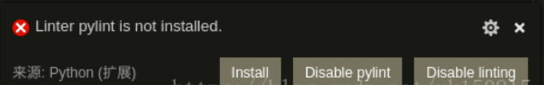
直接点击安装，由于缺少pip环境会导致安装失败。
于是先安装pip：sudo apt-get install python-pip
然后直接安装即可：pip install pylint
sublime text3
运行命令添加密钥环：
1
wget -qO - https://download.sublimetext.com/sublimehq-pub.gpg | sudo apt-key add -
添加apt存储库:
1
echo "deb https://download.sublimetext.com/ apt/stable/" | sudo tee /etc/apt/sources.list.d/sublime-text.list
通过Synaptic包管理器或运行命令安装sublime-text包：
1
sudo apt update && sudo apt install sublime-text
java jdk-8
更新软件包列表：
1 | sudo apt-get update |
2、安装openjdk-8-jdk：
1 | sudo apt-get install openjdk-8-jdk |
3、查看java版本，看看是否安装成功：
1 | java -version |
调整终端字体大小
默认的实在太小了,眼都快瞎了><
终端右键
Preferences按图搞一波~~
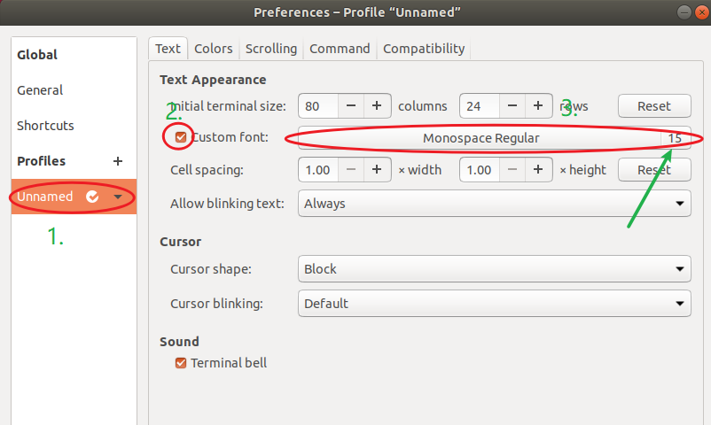
pycharm
本来对pycharm无感的来着,在成功申请jetbrains的学生优惠后……
真香
jetbrain的操作都差不多,webstore的安装,修改,加速都和pycharm一样
安装
下载linux版本的jetbrains toolbox: https://www.jetbrains.com/toolbox-app/
拖到虚拟机,提取,点击即可使用
十分方便下载,如图
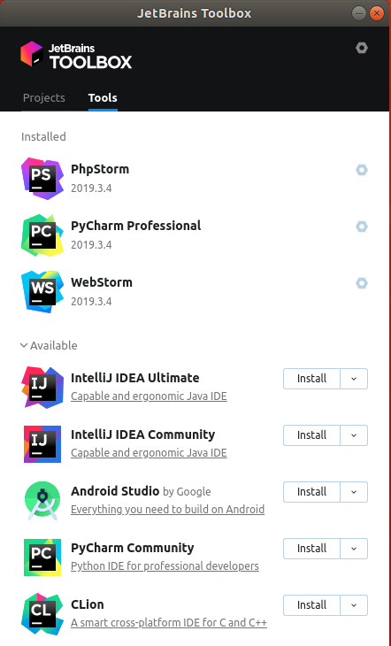
修改字体大小
file—>setting
如图修改菜单栏字体大小

如图修改代码字体大小

jupyter notebook
安装
一开始是从anaconda开始的,所以对jupyter有特殊的情感呢
所以听说pycharm支持了,就搞起来试试
终端:
pip install jupyter==我看博客上都是直接pip的,但是安装后发现里面只有python2,所以”pip3 install jupyter”试试,ojbk==
下载的过程中报了好几次错(记录一下报错及处理方法)
- timeout: 继续下,不要管,反正好像是接着下的(我怀疑是网的原因)
- setuptool:
pip install setuptools==33.1.1
使用
如果不是pycharm用的话,直接终端输入
jupyter notebook就可以在浏览器中开一个了,直接用就行还是原来的配方,还是原来的味道
pycharm有两种使用方式
==不知道有没有编程浏览器那种的排版方式,左右的真的不习惯啊==
new一个file,选择jupyter类型,第一次使用,会提示你下载插件,下载完就行了
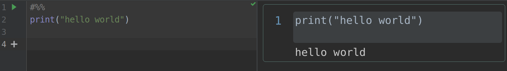
在终端中使用
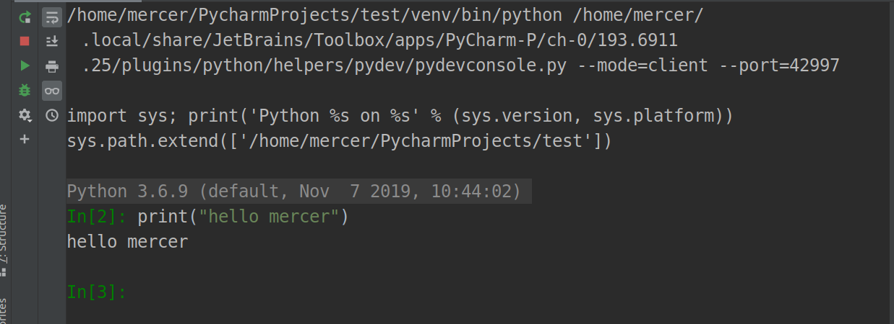
加速
pycharm打开有点慢,而且经常卡死,所以要修改一下配置
调整一下堆的大小,如图操作
- help–>find action
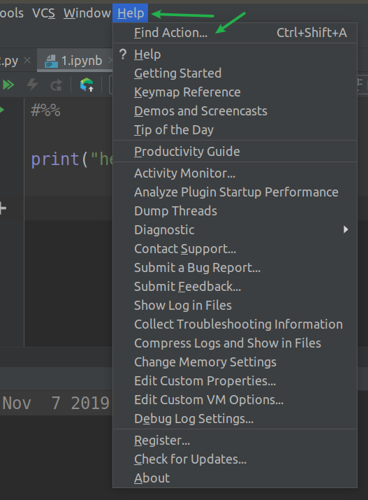
- 搜索vm options…
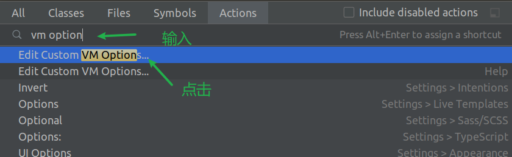
- 修改
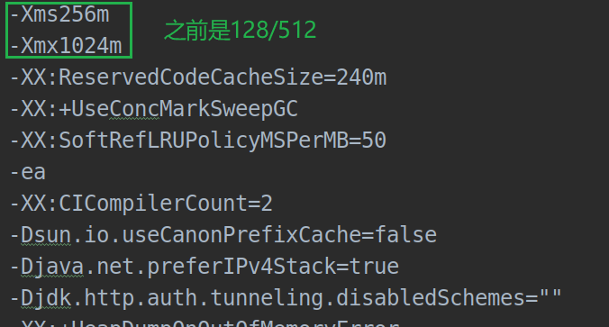
- 使用体验: 确实快了很多
时间同步
搞了半天,一看时间,嗯,还早
退出来一看……wtf!!!
啊,同步时间,迫在眉睫
查看时区(我的已经改过来了,原来是utc)
- UTC:协调世界时
- CST:北京时间
1
sudo date
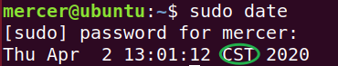
- 查看是否同步
1 | sudo timedatectl |
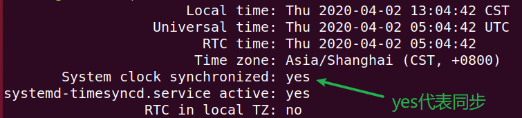
如果是no
重启服务(看看yes了没)
1
sudo systemctl restart systemd-timesyncd.service
启动服务(再康康yes了没)
1
sudo timedatectl set-ntp true
还不行?那我也木的办法了
更改时区
列出可用时区(按q退出)
1
timedatectl list-timezones
设置新时区(以上海为例)
1
sudo timedatectl set-timezone Asia/Shanghai
要是想换回原来的时区
1
sudo timedatectl set-timezone UTC
搭服务器
先下一堆东西
ssh
1
sudo apt-get install ssh
apache
1
sudo apt-get install apache2
apache默认网站的文件根目录在/var/www下面，html文件夹下面有个index.html里面记录的信息就是我们当时访问localhost，浏览器所显示的东西
sudo systemctl start apache2 //启动
sudo systemctl stop apache2 //停止
sudo systemctl restart apache2 //重启
sudo systemctl reload apache2 //在不重新启动连接的情况下应用配置更改。
sudo systemctl disable apache2 //禁止开机自启
mysql
1
sudo apt-get install mysql-server
mysql-client
1
sudo apt-get install mysql-client
php
1
sudo apt-get install php
php&apache的连接件
1
sudo apt-get install libapache2-mod-php
phpmyadmin
1
sudo apt-get install phpmyadmin
中文
- 在应用中找到
language supporting
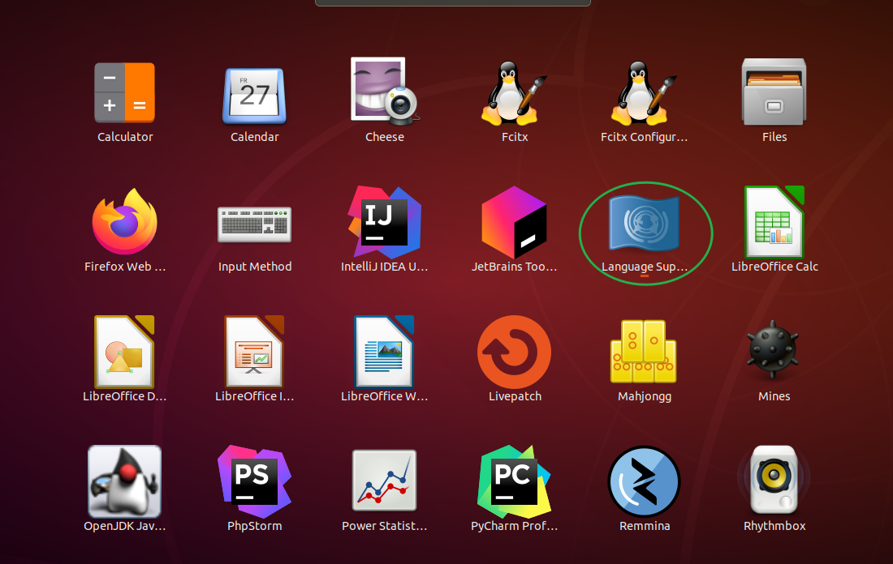
install/remove language–>chines(simplifled)–>apply
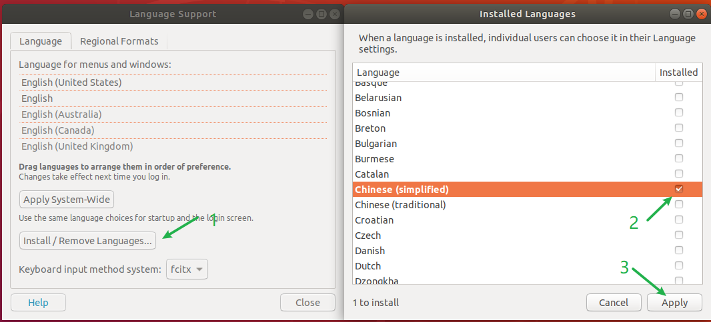
下载过程中会让你输入密码
手动把中国汉字拉到第一个,apply
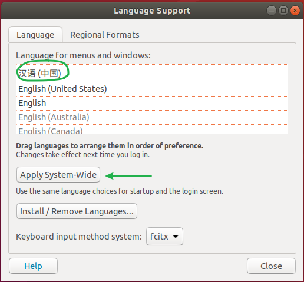
重启
ojbk
美化
sudo apt-get install gnome-tweak-toolsudo apt-get install gnome-shell-extension-dashtodock扩展,用于配置任务栏(我想把放到下面并居中)
重启
gnome-tweaks,或从应用中打开,中文名为优化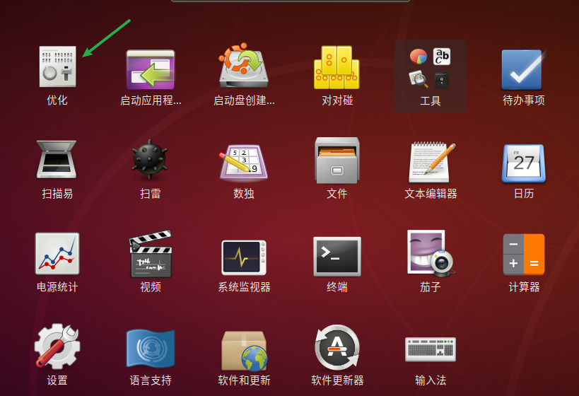
根据自己的喜好进行配置
附我的配置
主题(其实这个外观已经时应用后的样子了)
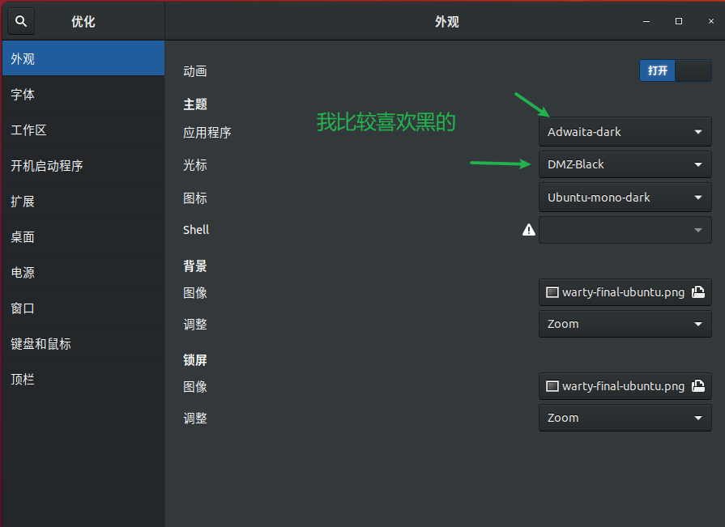
任务栏
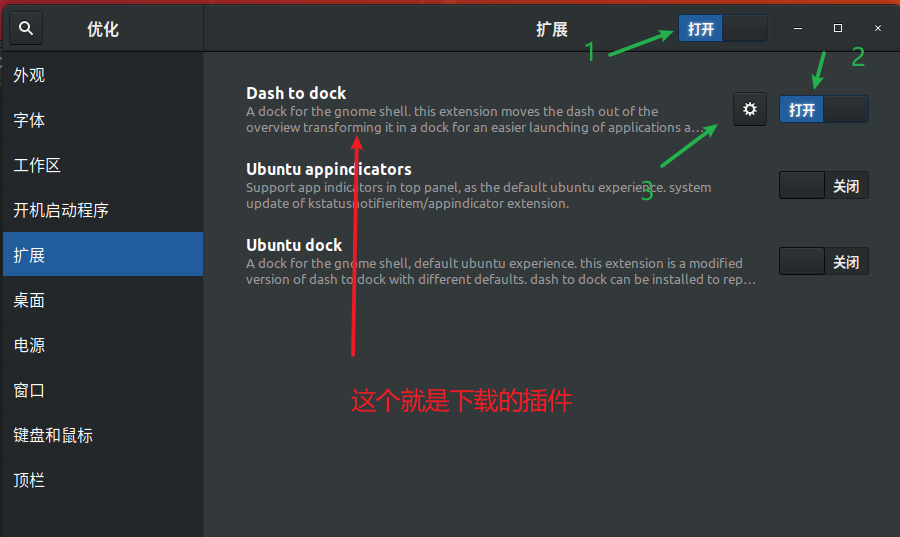
配置

结果
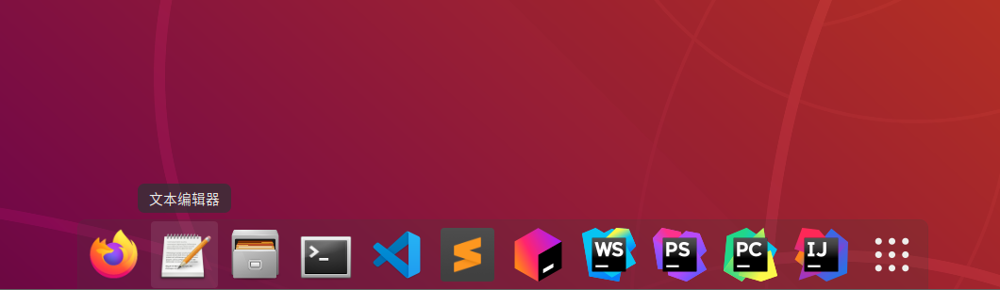
腾点空间
为啥突然想不开,搞清理呢?
我的破电脑空间不够用了,大清理了一番
居安思危,觉得虚拟机也得清理 (什么歪理啊,tui)
清理垃圾
Ubuntu系统在运行时是不会产生无用垃圾的。但是我们在升级系统时，软件管理器下载的软件包，系统则不会自动删除，其实这样做也是考虑到你可能会再次安装从而加快再次安装的速度考虑。
删除已卸载掉软件包
sudo apt-get autoclean
删除所有安装包
sudo apt-get clean
删除孤立包(某些软件的依赖项,但别的软件用不上)
sudo apt-get autoremove
删除老旧内核
查看内核版本,免得误删
1
uname -r
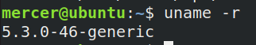
显示文件
1
dpkg ---selections | grep linux
已经删完了,就补张图好了><

删掉低版本的内核文件image、头文件headers
1
sudo apt-get purge 内核文件名 头文件名
git
下载(我下的时候已经默认存在了)
1
sudo apt install git
查看版本
1
git --version
配置名称和邮箱
1
2git config --global user.name "123"
git config --global user.email "123@123.net"可通过查看.gitconfig来验证配置更改
1
git config --list
如果用了 –global 选项，那么更改的配置文件就是位于你用户主目录下的那个，以后你所有的项目都会默认使用这里配置的用户信息。
如果要在某个特定的项目中使用其他名字或者电邮，只要去掉 –global 选项重新配置即可，新的设定保存在当前项目的 .git/config 文件里。
问题
N: 无法安全地用该源进行更新，所以默认禁用该源。
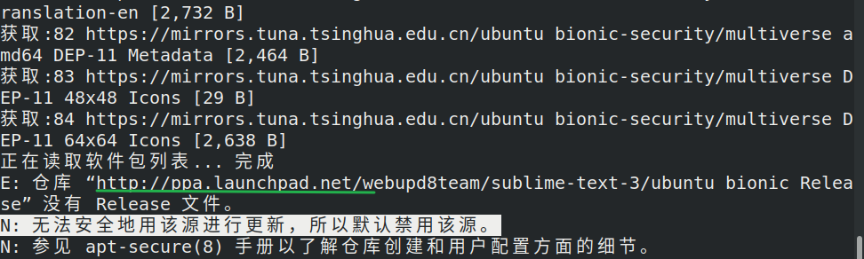
打开软件与更新

其他软件–>把勾去掉
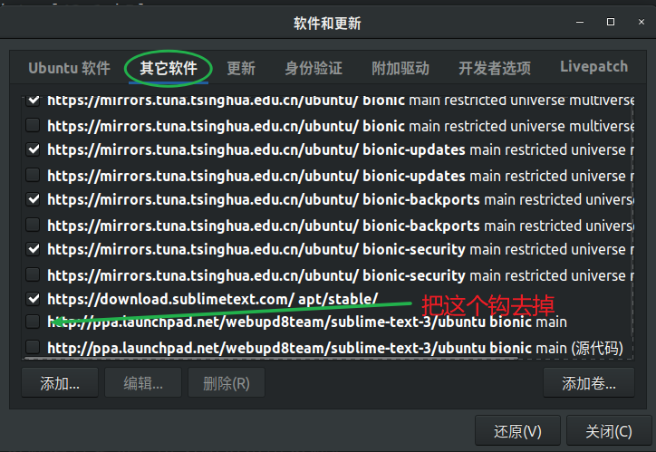
参考
奇奇怪怪: https://zhuanlan.zhihu.com/p/56253982
sogou: https://blog.csdn.net/lupengCSDN/article/details/80279177
vscode
vscode安装: https://linuxize.com/post/how-to-install-visual-studio-code-on-ubuntu-18-04/
配置py: https://blog.csdn.net/yk150915/article/details/81087282
sublime text3: https://www.linuxidc.com/Linux/2019-03/157533.htm
jdk-8: https://blog.csdn.net/zbj18314469395/article/details/86064849
pycharm
pycharm中jupyter使用方法: https://blog.csdn.net/xiemanR/article/details/71837385
时间同步: https://linux.cn/article-11220-1.html
中文: https://m.jb51.net/os/Ubuntu/298601.html
美化: https://blog.csdn.net/weixin_43629813/article/details/100525856
git: https://www.linuxidc.com/Linux/2018-05/152610.htm
问题: https://blog.csdn.net/weixin_42966187/article/details/89380505